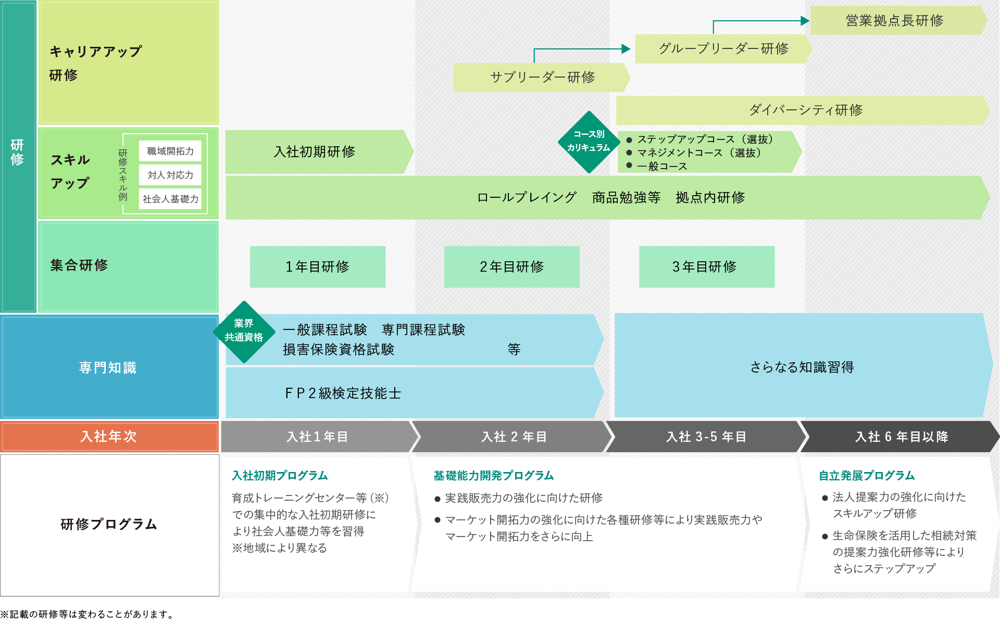

お客さまから信頼される良きパートナーとして成長していくために、入社時はもちろん、年次や職務に応じた教育・研修を通じ知識・スキルを習得。
またキャリアアップに向けた研修カリキュラムを用意し、成長をバックアップする体制が整っています。
教育体系(イメージ)

- 入社初期プログラム (入社1年目)
-
育成トレーニングセンター等(※)での集中的な入社初期研修により社会人基礎力等を習得 ※地域により異なる
- 基礎能力開発プログラム (入社2年目、入社3〜5年目)
-
●実践販売力の強化に向けた研修
●マーケット開拓力の強化に向けた各種研修等
により実践販売力やマーケット開拓力をさらに向上
- 自立発展プログラム (入社6年目以降)
-
●法人提案力の強化に向けたスキルアップ研修
●生命保険を活用した相続対策の提案力強化研修等
によりさらにステップアップ